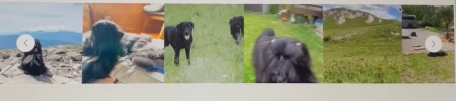

TENDREL TIBETAN TERRIER
TENDREL
TIBETAN TERRIER
རྟེན་འབྲེལ
ABOUT THE BREED
チベタンテリアについて
チベットに古くから伝わるコンパニオン・ドッグ、チベタンテリア。
「Tibetan Terrier（テリア）」という名前は外見から付けられたもので、分類上はテリアではなくコンパニオン・ドッグです。長い歴史を持つ犬種だからこそ、犬種本来の姿を大切にしたいと考えています。
MORE
OUR DOGS現在の犬たち
JCH / GEORGIA
Miracles of Tibet Georgia
ハンガリーから迎えたチベタンテリア、Georgia（ジョージア）。健康、気質、構成、動き、そして犬種らしさを大切にしています。
GEORGIAPUPPIES仔犬について
